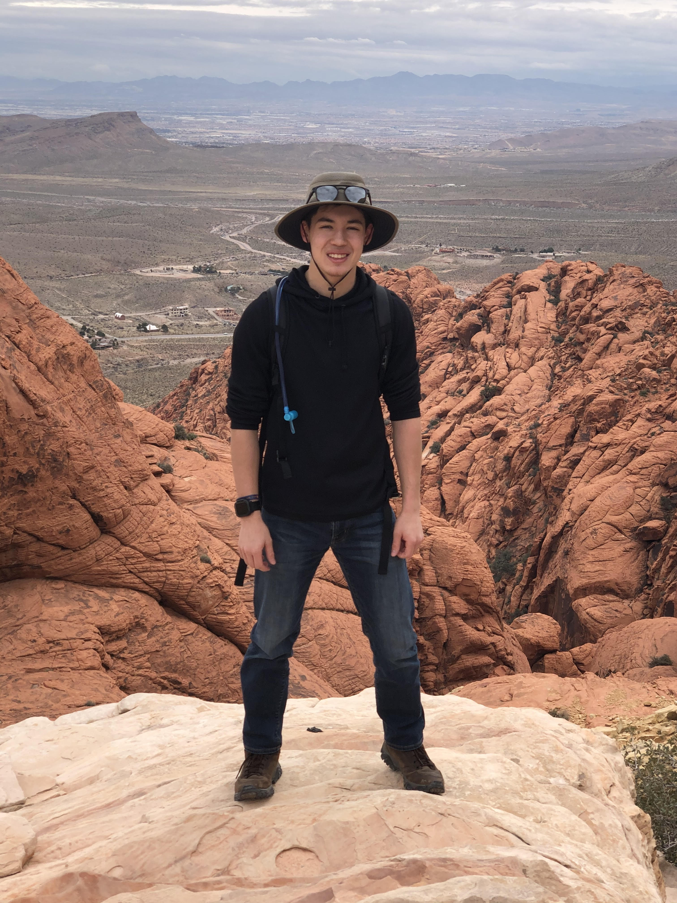

As written on the main page, I am a Midshipman at the Naval Academy in my 3rd year. I play hockey as my sport, do Robotics and Control Systems for my major, and play chess as a hobby. I was born in Chicago, Illinois, but I grew up in Tokyo, Japan. I was there for 9 years until the 2011 Earthquake, when my parents decided to move back to Chicago. My family is actually in the process of moving again, and we are setting up to be in Las Vegas, Nevada. The picture bellow shows me on a hiking trail outside of Vegas.
My dad is aslo named Charles. I am actually the 4th Charles in a row, but they gave the family middle name to by twin brother. My dad is a retired trader who worked with the Japanese stock and bond market.
My mother was born in Japan but she is fully Korean. She loves to take care of the family pitbull and play golf.
My sister's name is Emma. She is two years older than me and currently works as a restaurant manager for Joe's Stone Crab in Caesar's palace in Las Vegas. She went to UNLV for Hospitality.
My brother's name is Chris. He is my twin brother but I am definitely the older one. He is currently at Georgetown University but he is unsure what he wants to study. He really likes hockey, boxing, and video games.